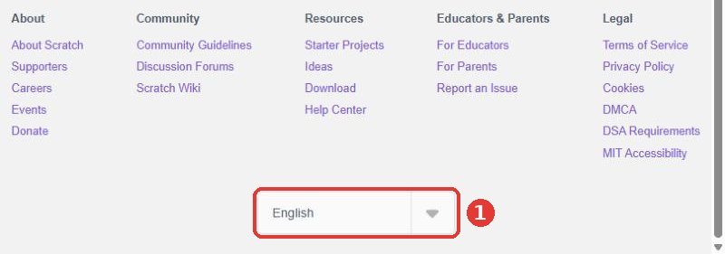
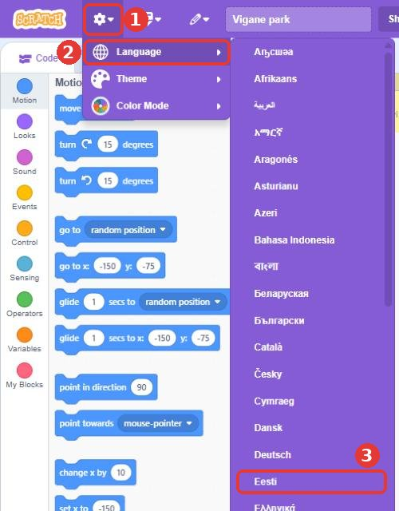

Kui Scratch on inglise keeles, muuda keel enne alustamist eestikeelseks. Seda saab teha kahes kohas. Vali see, kus sa parajasti oled.
Scratchi veebilehel
Keri lehe kõige lõppu.
Klõpsa keelekastil, kus on kirjas English.
Vali loendist Eesti.

Projekti sees
Klõpsa üleval vasakul hammasratta ikoonil.
Vii hiir sõna Language peale.
Vali loendist Eesti. Keeled on tähestiku järjekorras ja Eesti on kohe Deutsch'i järel.

Tavaliselt jätab brauser keele meelde. Kui Scratch on järgmisel korral jälle inglise keeles, tee sama uuesti.
Teema 0
Enne alustamist
Mis on programm, mis on Scratch ja kuidas Scratchi aken välja näeb.
TeooriaMis on programm?
Arvuti ei mõtle ise. Ta teeb täpselt seda, mida talle öeldakse, ja täpselt selles järjekorras. Algoritm on samm-sammuline juhend mingi töö tegemiseks. Hommikune riietumine, võileiva tegemine ja koolitee on kõik algoritmid.
Programm on algoritm, mis on kirjutatud nii, et arvuti saab sellest aru ja oskab seda täita. Programmi kirjutamist nimetatakse programmeerimiseks.
Scratch on programmeerimiskeel, kus käske ei trükita, vaid need lohistatakse kokku värvilistest plokkidest nagu Lego klotsid. Plokid sobivad kokku ainult nii, nagu need sobima peavad, nii et vigu on raskem teha.
Lava
Valge ala paremal üleval. Seal näed, mida sinu programm teeb.
Sprait
Tegelane või asi laval (näiteks kass, õun, päike). Igal spraidil on oma programm.
Taust
Pilt lava taga.
Plokk
Üks käsk. Plokid on jagatud värvi järgi rühmadesse: LiikumineVälimusSündmusedJuhtimineAnduridTehtedMuutujad
Skript
Kokku pandud plokkide virn. Scratch täidab seda ülevalt alla.
Scratchi aken. 1 plokid, mida saad kasutada · 2 siia lohistad plokid kokku · 3 lava, rohelise lipu ja punase stoppnupuga · 4 sinu spraidid ja nupp uue spraidi lisamiseks.
0
Logi sisse ja tee uus projekt
5 min
Mine aadressile scratch.mit.edu ja vajuta üleval paremal Logi sisse (inglise keeles Sign in). Kasutajanime ja parooli saad õpetajalt.
Kui leht on inglise keeles, muuda see eesti keelde. Kuidas seda teha, vaata lehe algusest.
Vajuta üleval Loo (inglise keeles Create). Avaneb uus projekt, kus on kass.
Kirjuta projekti nimi üleval asuvasse kasti: park. Oma päris nime pealkirja ära kirjuta, sest Scratchis on jagatud projektid kõigile nähtavad.
Salvesta tihti: Fail → Salvesta nüüd. Scratch salvestab sisse logitud kasutajal ka ise, kuid kindlam on vajutada.
Programmi käivitab roheline lipp lava kohal. Punane stoppnupp peatab kõik.
↗
Kaks projekti ja töö jagamine õpetajale
loe enne alustamist
Sul on kursusel kaks projekti:
park: siin teeme ülesandeid koos õpetajaga. Õpetaja näitab ette ja sina teed järgi. Seda projekti täiendad kogu kursuse jooksul.
meri: siin teed iga teema lõpus iseseisvad ülesanded (veealune maailm). Tee uus projekt nimega meri, kui jõuad esimese iseseisva ülesandeni.
Park: jaga ainult üks kord
Teema 1 lõpus vajuta oma park-projektis üleval Jaga.
Vajuta Vaata projektilehte ja seal Lisa stuudiosse → 00 Minu park.
Edasi töötad kogu aeg samas park-projektis. Ära tee sellest koopiat. Kui salvestad (Fail → Salvesta nüüd), näeb õpetaja sinu muudatusi kohe stuudios.
Meri: jaga iga teema lõpus
Kui teema iseseisvad ülesanded on tehtud, vali Fail → Salvesta koopiana. Scratch avab nüüd koopia.
Pane koopiale nimeks teema number ja meri, näiteks T2 meri.
Vajuta Jaga, siis Vaata projektilehte ja Lisa stuudiosse. Vali selle teema stuudio, näiteks 02 Tegelane liigub.
Mine tagasi oma algse meri-projekti juurde: Minu asjad (kausta ikoon üleval) → meri. Järgmise teema ülesanded teed seal. Nii jääb iga teema koopia muutmata ja õpetaja näeb, mida sa selles teemas tegid.
Joonistad pargi tausta, oma tegelase ja lisad galeriist õuna. Sellest pildist saab kogu kursuse projekt, mida igas teemas edasi ehitad.
TeooriaSprait, kostüüm ja taust
Iga asi, mis laval liigub või midagi teeb, on sprait. Taust on ainult pilt: see ei liigu ega räägi, aga seda saab vahetada.
Spraidi välimust nimetatakse kostüümiks. Ühel spraidil võib olla mitu kostüümi, nagu näitlejal mitu riietust. Kostüüme vahetades saab tegelase liikuma panna (sellest räägime teemas 3).
Joonistusprogrammis on kaks režiimi. Vektorgraafikas koosneb pilt kujunditest, mida saab hiljem liigutada ja suurendada ilma, et pilt uduseks läheks. Rastergraafikas koosneb pilt väikestest täppidest nagu foto. Scratch alustab vektorgraafikaga ja see sobib meile hästi.
1
Tausta joonistamine
joonistamine15–20 min
Ülesanne: loo taust, millel on muru, lill, puu ja päike.
Kuidas teha
Vii hiir paremal all oleva Lava nupu peale (taustapildi ikoon). Ilmuvast menüüst vali pintsliga nupp Joonista.
Avaneb Taustad vahekaart. Vali Ristkülik, vali Täide värviks roheline ja joonista lava alumisse ossa lai ristkülik. See on muru.
Puu: joonista pruun kitsas ristkülik (tüvi) ja selle peale roheline Ring (võra).
Päike: kollane ring taeva nurka. Hoia ringi joonistades all Shift-klahvi, siis tuleb täpselt ümmargune ring.
Lill: väike ring keskele ja 5–6 värvilist ringi selle ümber. Varre saad teha Joon tööriistaga.
Kui midagi läks valesti, vajuta Võta tagasi (kõverdatud nool).
Kontrolli
2
Uue spraidi joonistamine
joonistamine15–20 min
Ülesanne: joonista uus tegelane, kellel on seljas särk, jalas pikad püksid ja peas tutimüts.
Kuidas teha
Vii hiir spraitide ala paremal all oleva kassi-ikooni peale ja vali Joonista.
Joonista tegelane kujunditest: ring peaks, ristkülik särgiks, kaks kitsast ristkülikut pükste säärteks, jooned käteks.
Tutimüts: kolmnurga saad, kui joonistad ristküliku ja muudad Kuju muutmine tööriistaga selle nurki. Tutt on väike ring mütsi otsas.
Pane spraidile nimi. Spraitide ala kohal on väli Sprait: kirjuta sinna Tegelane.
Kassi pole enam vaja: tee kassil paremklõps ja vali eemalda.
Nipp: kui tegelane on liiga suur, muuda spraidi alas välja Suurus väärtust (näiteks 50).
Kontrolli
3
Olemasoleva spraidi kasutamine
galerii5 min
Ülesanne: lisa puu otsa õun Scratchi galeriist.
Kuidas teha
Vajuta spraitide alas kassi-ikoonile (Vali sprait). Avaneb galerii.
Galerii nimed on inglise keeles. Kirjuta otsingusse apple ja klõpsa õunal.
Muuda spraidi nimeks Õun ja suuruseks umbes 50.
Lohista õun laval hiirega puu võra peale.
Kontrolli
Iseseisvad ülesanded: veealune maailm
Need ülesanded harjutavad samu oskusi, aga teises projektis. Tee need ise, ilma järgi vaatamata. Kui jääd hätta, ava vihje või vaata ülevalt sama numbriga ülesannet.
1
Veealune taust
iseseisev15 min
Ülesanne: Joonista uus taust: veealune maailm. Peab olema sinine vesi, liivane põhi, vähemalt kaks vetikat ja üks kivi.
Vihje
Kasuta samu tööriistu nagu pargi taustal: Ristkülik, Ring ja Täide. Vetika saad joonistada Pintsliga.
Kiirematele: Lisa taustale mullid või päikesekiired, mis paistavad läbi vee.
Kontrolli
2
Oma kala
iseseisev15 min
Ülesanne: Joonista kala, kellel on silm, saba ja vähemalt kaks uime. Pane spraidi nimeks Kala.
Vihje
Keha saad Ringi tööriistaga, kui joonistad ilma Shift-klahvita (siis tuleb ovaal). Saba on ristkülik, mille nurki muudad Kuju muutmise tööriistaga.
Kontrolli
3
Krabi galeriist
iseseisev5 min
Ülesanne: Lisa galeriist krabi (otsi sõnaga crab) ja pane ta liivale. Pane talle nimeks Krabi. Lisa veel üks mereloom omal valikul.
Vihje
Galerii nimed on inglise keeles: meritäht on starfish, kala on fish, hai on shark.
Kontrolli
Jaga oma tööd.Park: jaga see nüüd üks kord: vajuta Jaga, siis projekti lehel Lisa stuudiosse → 00 Minu park. Edasi töötad samas projektis ja ainult salvestad. Meri:Fail → Salvesta koopiana, pane koopiale nimeks T1 meri, vajuta Jaga ja projekti lehel Lisa stuudiosse → 01 Pilt ja tegelased. Seejärel ava uuesti oma algne meri-projekt (Minu asjad → meri).
Kordamiseks
Mis vahe on spraidil ja taustal?
Sprait on tegelane või asi, millel on oma programm ja mis võib liikuda. Taust on pilt lava taga, see ei liigu.
Mis on kostüüm?
Spraidi välimus. Ühel spraidil võib olla mitu kostüümi.
Paned tegelase liikuma klaviatuuriga, lisad hiirega juhitava liblika ja saadad tegelase täpselt määratud kohta.
TeooriaSündmused ja koordinaadid
Kollased Sündmused plokid ütlevad, millal skript käivitub: kui klõpsatakse rohelist lippu, kui vajutatakse klahvi või kui klõpsatakse spraiti. Ilma sündmuseta plokk ei tee midagi enne, kui sellele ise klõpsad.
Iga koht laval on kirjas kahe arvuga. x näitab, kui palju vasakule või paremale, ja y, kui palju üles või alla. Lava keskel on x = 0 ja y = 0. Lava on 480 sammu lai ja 360 sammu kõrge, seega ulatub x −240-st 240-ni ja y −180-st 180-ni. Liikumise plokkides nimetatakse samme punktideks.
Kui x kasvab, liigub sprait paremale. Kui kahaneb, siis vasakule.
Kui y kasvab, liigub sprait üles. Kui kahaneb, siis alla.
Lava koordinaadid. Spraidi praeguse asukoha näed spraitide ala kohal väljadelt x ja y.
4
Juhtimine W A S D klahvidega
SündmusedLiikumine10–15 min
Ülesanne: pane tegelane liikuma W, A, S ja D klahvidega. W viib üles, S alla, A vasakule ja D paremale.
Kuidas teha
Vali spraitide alast Tegelane. Kood läheb alati sellele spraidile, mis on parajasti valitud.
Lohista Sündmused alt skriptialale plokk kui klõpsata klahvi tühik. Vali rippmenüüst w.
Lisa selle alla Liikumine alt muuda y 10 võrra.
Tee sama veel kolm korda: s → muuda y −10 võrra, a → muuda x −10 võrra, d → muuda x 10 võrra.
Proovi: vajuta lava peale ja seejärel klahve W, A, S ja D.
Tegelane
kui klõpsata klahvi [w v]
muuda y (10) võrra
kui klõpsata klahvi [s v]
muuda y (-10) võrra
kui klõpsata klahvi [a v]
muuda x (-10) võrra
kui klõpsata klahvi [d v]
muuda x (10) võrra
Nipp: plokki saad kopeerida, kui teed sellel paremklõpsu ja valid Paljunda. Siis tuleb ainult klahv ja arv ära muuta.
Kontrolli
5
Liblikas jälitab hiirt
SündmusedJuhtimineLiikumine10–15 min
Ülesanne: lisa parki uus tegelane, liblikas, ja pane ta jälitama hiirekursorit.
Miks uus tegelane? Tegelast juhid juba W, A, S ja D klahviga. Kui paneksid hiire jälitamise samale spraidile, segaksid kaks skripti teineteist. Nii on igal tegelasel oma juhtimine: Tegelane liigub klahvidega ja Liblikas hiirega.
Kuidas teha
Lisa galeriist liblikas: vajuta spraitide alas kassi-ikoonile (Vali sprait), kirjuta otsingusse butterfly ja klõpsa liblikal.
Pane spraidile nimeks Liblikas ja suuruseks umbes 50.
Vaata, et spraitide alas oleks valitud Liblikas. Kood läheb alati sellele spraidile, mis on parajasti valitud.
Võta kui klõpsata 🏁 (rohelise lipuga) plokk.
Juhtimine alt lisa korda lõputult. Kõik, mis on selle sees, toimub uuesti ja uuesti.
Pane kordusesse osuta hiirekursor-le ja liigu 5 punkti.
Vajuta rohelist lippu ja liiguta hiirt laval. Proovi samal ajal ka Tegelast W, A, S ja D klahviga juhtida. Peatamiseks vajuta stoppnuppu.
Kui liblikas läheb pea alaspidi, ava spraidi alas Suund ja vali vasak/parem.
Liblikas
kui klõpsata @greenFlag
korda lõputult
osuta (hiirekursor v)-le
liigu (5) punkti
end
Kiirematele: liblikas jääb vahetult enne kursorini jõudmist seisma. Liigu ainult siis, kui kaugus kursorist on suurem kui 10. Seda kui … siis plokki õpid lähemalt teemas 8.
kui klõpsata @greenFlag
korda lõputult
osuta (hiirekursor v)-le
kui <(kaugus (hiirekursor v)-st) > [10]> siis
liigu (5) punkti
end
end
Kontrolli
6
Kindel alguspunkt
Liikumine5 min
Ülesanne: määra tegelase alguspunktiks x: 0 ja y: 0.
Kuidas teha
Võta kui klõpsata 🏁 ja lisa selle alla mine x: 0 y: 0.
Lohista tegelane laval kuhugi nurka ja vajuta rohelist lippu. Tegelane hüppab keskele tagasi.
Miks see oluline on? Kui mäng algab iga kord samast kohast, töötab see alati ühtemoodi. Head programmid seavad alguses kõik asjad paika.
Need ülesanded harjutavad samu oskusi, aga teises projektis. Tee need ise, ilma järgi vaatamata. Kui jääd hätta, ava vihje või vaata ülevalt sama numbriga ülesannet.
4
Kala ujub nooltega
iseseisev10 min
Ülesanne: Pane kala liikuma nooleklahvidega: nool üles, nool alla, nool vasakule ja nool paremale.
Vihje
Täpselt nagu W A S D ülesandes, aga plokis kui klõpsata klahvi vali rippmenüüst noolte nimed.
Kiirematele: Kui kala ujub vasakule, pööra ta ka vasakule: lisa plokk osuta suunas -90 (ja paremale minnes osuta suunas 90).
Kontrolli
5
Krabi jälitab kala
iseseisev10 min
Ülesanne: Krabi jälitab kala: ta pöörab end kogu aeg kala poole ja liigub korraga 2 punkti.
Vihje
Nagu ülesandes 5, aga plokis osuta …-le vali hiirekursori asemel Kala. Skript tuleb panna krabile, mitte kalale.
Kiirematele: Krabi läheb pea alaspidi. Vali krabi suunaks vasak/parem.
Kontrolli
6
Alguspunktid
iseseisev5 min
Ülesanne: Kui klõpsata rohelist lippu, läheb kala lava vasakusse ossa x: -150, y: 0 ja krabi paremale alla x: 150, y: -130.
Vihje
Igal spraidil on oma skript. Mõlemal on vaja plokki mine x: … y: …
Kontrolli
7
Kala ujub edasi-tagasi
iseseisev5–10 min
Ülesanne: Rohelise lipu peale ujub kala alguspunktist kohta x: 150, y: 100 ja siis tagasi alguspunkti. Mõlemad liuglemised kestavad 2 sekundit.
Vihje
Sul on vaja kahte liugle-plokki üksteise all.
Kiirematele: Lisa vahele oota 1 sek, et kala puhkaks enne tagasi ujumist.
Kontrolli
Jaga oma tööd.Park: lihtsalt salvesta (Fail → Salvesta nüüd). Õpetaja näeb seda stuudios 00 Minu park. Meri:Fail → Salvesta koopiana, pane koopiale nimeks T2 meri, vajuta Jaga ja projekti lehel Lisa stuudiosse → 02 Tegelane liigub. Seejärel ava uuesti oma algne meri-projekt (Minu asjad → meri).
Kordamiseks
Mis on lava keskpunkti koordinaadid?
x: 0 ja y: 0.
Tegelane peab liikuma alla. Kas muudad x-i või y-it? Kas plussi või miinusega?
y-it ja miinusega, näiteks muuda y −10 võrra.
Miks iga skript algab kollase plokiga?
Kollane sündmuse plokk ütleb, millal skript käivitub. Ilma selleta ei tea Scratch, millal plokke täita.
Annad tegelasele teise välimuse ja vahetad seda klahviga. Õpid spraiti peitma ja uuesti näitama.
TeooriaKuidas multifilm liigub
Multifilm koosneb paljudest piltidest, mis on üksteisest natuke erinevad. Kui pildid vahetuvad kiiresti, tundub meile, et tegelane liigub. Seda nimetatakse animatsiooniks.
Scratchis on need pildid spraidi kostüümid. Plokk järgmine kostüüm võtab järjekorras järgmise kostüümi. Kui kostüümid saavad otsa, alustab Scratch uuesti esimesest. Plokk võta kostüüm … võtab kindla kostüümi nime järgi.
peida teeb spraidi nähtamatuks ja näita toob selle tagasi. Peidetud sprait on endiselt olemas ja tema skriptid töötavad edasi.
8
Kaks kostüümi
joonistamine10–15 min
Ülesanne: joonista tegelasele kaks kostüümi: ühel on käed üleval ja teisel all.
Kuidas teha
Vali Tegelane ja ava üleval vahekaart Kostüümid.
Vasakul on kostüümide nimekiri. Tee esimesel kostüümil paremklõps ja vali paljunda. Nüüd on sul kaks ühesugust kostüümi.
Pane kostüümidele nimed. Joonistusala kohal on väli Kostüüm: esimese nimi on käed all, teise oma käed üleval.
Vali teine kostüüm. Vali käed tööriistaga Vali ja pööra need üles (lohista valiku kohal olevat noolt). Või kustuta käed ja joonista uued.
Kontrolli
9
Kostüümi vahetamine klahviga
SündmusedVälimus5–10 min
Ülesanne: tee skript, mis vahetab N-klahvi vajutades kostüümi (võtab järgmise kostüümi).
Kuidas teha
Mine tagasi vahekaardile Kood.
Võta kui klõpsata klahvi ja vali klahviks n.
Lisa Välimus alt järgmine kostüüm.
Vajuta mitu korda N-klahvi. Tegelane tõstab ja langetab käsi.
Tegelane
kui klõpsata klahvi [n v]
järgmine kostüüm
Kontrolli
10
Peitmine ja näitamine
SündmusedVälimus5–10 min
Ülesanne: kui tegelasele klõpsata, läheb ta peitu. Tühikut vajutades tuleb ta peidust välja.
Kuidas teha
Võta Sündmused alt kui spraiti klõpsata ja lisa selle alla peida.
Teine skript: kui klõpsata klahvi tühik ja selle alla näita.
Proovi: klõpsa laval tegelasele, siis vajuta tühikut.
Tegelane
kui spraiti klõpsata
peida
kui klõpsata klahvi [tühik v]
näita
Hea tava: lisa rohelise lipu skripti algusesse ka näita. Muidu võib juhtuda, et järgmisel käivitusel on tegelane ikka peidus.
Kontrolli
Iseseisvad ülesanded: veealune maailm
Need ülesanded harjutavad samu oskusi, aga teises projektis. Tee need ise, ilma järgi vaatamata. Kui jääd hätta, ava vihje või vaata ülevalt sama numbriga ülesannet.
8
Kala avab suu
iseseisev10 min
Ülesanne: Joonista kalale teine kostüüm, kus suu on lahti. Pane kostüümidele nimed suu kinni ja suu lahti.
Vihje
Tee kostüümist koopia (paremklõps → paljunda) ja muuda ainult suud.
Kontrolli
9
Suu klahvidega
iseseisev5–10 min
Ülesanne: Klahv L paneb kalale kostüümi suu lahti ja klahv K kostüümi suu kinni.
Vihje
Siin ei sobi järgmine kostüüm. Kasuta plokki võta kostüüm … ja vali kostüümi nimi.
Kontrolli
10
Krabi peidab end
iseseisev5–10 min
Ülesanne: Kui krabile klõpsata, peidab ta end liiva sisse ja tuleb 3 sekundi pärast ise välja.
Vihje
Kõik kolm plokki on ühes skriptis: peida, oota, näita.
Kiirematele: Lisa rohelise lipu skripti algusesse näita, et krabi ei jääks peitu.
Kontrolli
Jaga oma tööd.Park: lihtsalt salvesta (Fail → Salvesta nüüd). Õpetaja näeb seda stuudios 00 Minu park. Meri:Fail → Salvesta koopiana, pane koopiale nimeks T3 meri, vajuta Jaga ja projekti lehel Lisa stuudiosse → 03 Kostüümid, peitmine ja näitamine. Seejärel ava uuesti oma algne meri-projekt (Minu asjad → meri).
Kordamiseks
Mis vahe on plokkidel „järgmine kostüüm“ ja „võta kostüüm …“?
„järgmine kostüüm“ võtab järjekorras järgmise kostüümi. „võta kostüüm …“ võtab alati sama kostüümi, mille nime sa valid.
Kas peidetud spraidi skriptid töötavad?
Jah. Sprait on ainult nähtamatu.
Vaata lisaks: TÜ Scratchi materjalid, 4. Liikumine ja andurid I (video 2: kostüümid, peida ja näita).
Teema 4 · ülesanded 11–12
Taustade vahetamine
Päev ja öö, alguskuva ja mängu lõpp. Kõik see tehakse taustu vahetades.
TeooriaLava on ka sprait
Lava ei ole ainult pilt. Ka lavale saab programmi kirjutada: klõpsa paremal all Lava peale ja sul on tühi skriptiala. Lava ei saa liikuda, aga ta saab vahetada tausta nagu sprait vahetab kostüümi.
võta taust … võtab kindla tausta nime järgi.
järgmine taust võtab järjekorras järgmise.
kui taustaks saab … on sündmus. Iga sprait saab sellega reageerida, kui taust vahetub, näiteks peituda või välja tulla.
Mängudes on tavaliselt vähemalt kolm tausta: alguskuva (mängu nimi ja juhend), mänguväli ja lõpukuva (võit või kaotus). Pane taustadele selged nimed, siis on neid lihtne valida.
11
Päev ja öö
VälimusSündmused15 min
Ülesanne: pargil on kaks tausta, päev ja öö. Kui klõpsad laval, vahetub taust.
Kuidas teha
Klõpsa paremal all Lava peale ja ava vahekaart Taustad.
Pane oma pargi taustale nimeks päev. Tee sellel paremklõps → paljunda ja pane koopiale nimeks öö.
Muuda öö taevas Täide tööriistaga tumesiniseks ja tee päikesest kollane kuu.
Mine tagasi Kood vahekaardile (Lava on endiselt valitud). Tee skriptid: rohelise lipu peale võta taust päev ja kui lava klõpsata peale järgmine taust.
Lava
kui klõpsata @greenFlag
võta taust [päev v]
kui lava klõpsata
järgmine taust
Kontrolli
12
Alguskuva
VälimusSündmused15–20 min
Ülesanne: mäng algab alguskuvaga, kus on mängu nimi ja tekst „Vajuta tühikut“. Tühiku vajutamisel tuleb pargi taust ja alles siis ilmub tegelane.
Kuidas teha
Lava → Taustad → Joonista. Pane uuele taustale nimeks algus ja kirjuta sinna Tekst tööriistaga mängu nimi ja „Vajuta tühikut“.
Muuda lava rohelise lipu skripti: võta taust algus (mitte päev).
Lisa lavale kui klõpsata klahvi tühik → võta taust päev.
Vali Tegelane. Rohelise lipu peale peida ja uue skripti kui taustaks saab päev peale näita.
Kui lavale klõpsamine (ülesanne 11) segab, lohista see skript kõrvale.
Lava
kui klõpsata @greenFlag
võta taust [algus v]
kui klõpsata klahvi [tühik v]
võta taust [päev v]
Tegelane
kui klõpsata @greenFlag
peida
kui taustaks saab [päev v]
näita
Kiirematele: peida alguskuval ka õun ja teised spraidid.
Kontrolli
Iseseisvad ülesanded: veealune maailm
Need ülesanded harjutavad samu oskusi, aga teises projektis. Tee need ise, ilma järgi vaatamata. Kui jääd hätta, ava vihje või vaata ülevalt sama numbriga ülesannet.
11
Kaks mereala
iseseisev15 min
Ülesanne: Pane oma veealusele taustale nimeks Korallid. Joonista teine taust Vrakk (näiteks põhjas lebav laev). Klahv 1 paneb tausta Korallid ja klahv 2 tausta Vrakk. Rohelise lipuga on alati Korallid.
Vihje
Need skriptid tulevad lavale: kui klõpsata klahvi 1 → võta taust Korallid. Lava skriptiala avaneb, kui klõpsad paremal all Lava peale.
Kiirematele: Kui taustaks saab Vrakk, ütleb kala „Siin on kummaline!“.
Kontrolli
12
Lõpukuva
iseseisev15 min
Ülesanne: Joonista taust Lõpp, kus on suur tekst „Head aega!“. Kui vajutad klahvi L, vahetub taust Lõpp-iks ning kala ja krabi peidavad end. Rohelise lipuga tulevad loomad tagasi ja taust on Korallid.
Vihje
Lavale: kui klõpsata klahvi l → võta taust Lõpp. Kalale ja krabile: kui taustaks saab Lõpp → peida, ja rohelise lipuga näita.
Kiirematele: Lisa ka alguskuva, kus on mängu nimi ja juhend, nagu ülesandes 12.
Kontrolli
Jaga oma tööd.Park: lihtsalt salvesta (Fail → Salvesta nüüd). Õpetaja näeb seda stuudios 00 Minu park. Meri:Fail → Salvesta koopiana, pane koopiale nimeks T4 meri, vajuta Jaga ja projekti lehel Lisa stuudiosse → 04 Taustade vahetamine. Seejärel ava uuesti oma algne meri-projekt (Minu asjad → meri).
Kordamiseks
Kust leiad lava skriptiala?
Klõpsa paremal all spraitide kõrval olevale Lava alale.
Kuidas saab sprait teada, et taust vahetus?
Plokiga kui taustaks saab … (Sündmused).
Teema 5 · ülesanne 13
Dialoog ja teated
Kaks tegelast räägivad kordamööda. Et nad teaksid, millal on nende kord, saadavad nad teineteisele teateid.
TeooriaTeade on nagu koolikell
Iga sprait töötab omaette. Õun ei tea, mida tegelane teeb, ja tegelane ei tea, mida teeb õun. Selleks et spraidid saaksid koostööd teha, on Scratchis teated.
Plokk teata … saadab teate kõigile spraitidele. See on nagu koolikell: kõik kuulevad seda, aga reageerivad ainult need, kes teavad, mida kella peale teha. Spraidi skript, mis algab plokiga kui saan teate …, käivitub siis, kui see teade saadetakse.
Pane teadetele nimed, mis ütlevad, mis juhtus. Näiteks vasta või õun söödud on paremad kui teade1.
13
Kaks tegelast räägivad
SündmusedVälimus15–20 min
Ülesanne: tee skript, kus vähemalt kaks tegelast ütlevad kordamööda teineteisele midagi.
Kuidas teha
Lisa teine tegelane: joonista ise või vali galeriist. Pane talle nimeks Sõber.
Vali Tegelane. Võta kui klõpsata 🏁 ja lisa Välimus alt ütle Tere! 2 sek. Kirjuta oma lause.
Lisa Sündmused alt teata. Vali rippmenüüst Uus teade ja anna nimeks vasta.
Vali Sõber. Võta kui saan teate vasta ja lisa selle alla ütle … 2 sek oma vastusega.
Jätka samamoodi: sõber saadab teate vasta 2 ja tegelane vastab sellele.
Tegelane
kui klõpsata @greenFlag
ütle [Tere! Kuidas läheb?] (2) sek
teata [vasta v]
kui saan teate [vasta 2 v]
ütle [Lähme! Võtan õuna kaasa.] (2) sek
Sõber
kui saan teate [vasta v]
ütle [Hästi! Kas tuled parki?] (2) sek
teata [vasta 2 v]
Kiirematele: tee vestlus vähemalt kuue lausega. Proovi ka plokki mõtle …, mis näitab mõttemulli.
Kontrolli
Iseseisvad ülesanded: veealune maailm
Need ülesanded harjutavad samu oskusi, aga teises projektis. Tee need ise, ilma järgi vaatamata. Kui jääd hätta, ava vihje või vaata ülevalt sama numbriga ülesannet.
13
Kala ja krabi räägivad
iseseisev15–20 min
Ülesanne: Kala ja krabi räägivad kordamööda. Kokku on vähemalt 4 lauset ja kasutatud on vähemalt kahte erinevat teadet.
Vihje
Iga kord, kui on teise tegelase kord rääkida, saada teade. Teine tegelane alustab skripti plokiga kui saan teate …
Kiirematele: Lisa kolmas tegelane, kes ütleb vestluse lõpus midagi.
Kontrolli
Jaga oma tööd.Park: lihtsalt salvesta (Fail → Salvesta nüüd). Õpetaja näeb seda stuudios 00 Minu park. Meri:Fail → Salvesta koopiana, pane koopiale nimeks T5 meri, vajuta Jaga ja projekti lehel Lisa stuudiosse → 05 Dialoog ja teated. Seejärel ava uuesti oma algne meri-projekt (Minu asjad → meri).
Kordamiseks
Miks on teateid vaja?
Spraidid ei tea üksteise skriptidest midagi. Teate abil saab üks sprait anda teistele märku, et nüüd on nende kord.
Mis ploki peab sprait kasutama, et teatele reageerida?
Sama tegevust ei pea kümme korda üles kirjutama. Selle jaoks on kordus.
TeooriaKordus ehk tsükkel
Kehalise kasvatuse tunnis ei ütle õpetaja „tee kükk, tee kükk, tee kükk …“ kümme korda. Ta ütleb „tee 10 kükki“. Programmeerimises on selleks kordus (teise nimega tsükkel). See täidab tema sees olevaid plokke mitu korda.
korda 10 korda kordab täpselt nii mitu korda, kui oled kirjutanud.
korda lõputult kordab seni, kuni vajutad stoppnuppu. Mängudes kasutatakse seda kõige rohkem.
Korduse plokk on nagu suu: plokid, mida kordad, pannakse selle sisse. Mis on korduse all, toimub alles pärast seda, kui kordus on lõppenud.
14
Korda 10 korda
JuhtimineVälimus10 min
Ülesanne: pane tegelane lehvitama. Vaheta 10 korda kostüümi (käed üleval / käed all) ja oota iga vahetuse järel 0,3 sekundit. Muuda korduste arvu ja vaata, mis juhtub.
Kuidas teha
Võta kui klõpsata 🏁.
Lisa Juhtimine alt korda 10 korda.
Pane korduse sissejärgmine kostüüm ja oota 0.3 sek.
Vajuta rohelist lippu ja loe, mitu korda tegelane käsi liigutab. Muuda siis 10 näiteks 4-ks.
Tähelepanu: Scratchis kirjutatakse komakohaga arv punktiga: 0.3, mitte 0,3.
Tegelane
kui klõpsata @greenFlag
korda (10) korda
järgmine kostüüm
oota (0.3) sek
end
Kontrolli
15
Korda lõputult
JuhtimineLiikumine10–15 min
Ülesanne: pane tegelane lava servast servani edasi-tagasi kõndima ja päike taevas aeglaselt pöörlema. Mõlemad tegevused kestavad seni, kuni vajutad stoppnuppu.
Kuidas teha
Tegelane: kui klõpsata 🏁 → korda lõputult → sisse liigu 5 punkti ja kui äärel, põrka.
Kui tegelane läheb pea alaspidi, vali spraidi alas Suund → vasak/parem.
Päike on praegu tausta osa ja taust ei saa pöörelda. Joonista päike uuesti eraldi spraidiks (nimi Päike) ja kustuta see taustalt Kustutaja abil.
Päike: kui klõpsata 🏁 → korda lõputult → sisse pööra ↻ 2 kraadi.
Mõlemal spraidil on oma skript ja rohelise lipu vajutamisel käivituvad need korraga.
Tegelane
kui klõpsata @greenFlag
korda lõputult
liigu (5) punkti
kui äärel, põrka
end
Päike
kui klõpsata @greenFlag
korda lõputult
pööra @turnRight (2) kraadi
end
Kiirematele: lisa tegelase kordusesse ka järgmine kostüüm ja oota 0.2 sek. Nüüd ta lehvitab kõndides.
Kontrolli
Iseseisvad ülesanded: veealune maailm
Need ülesanded harjutavad samu oskusi, aga teises projektis. Tee need ise, ilma järgi vaatamata. Kui jääd hätta, ava vihje või vaata ülevalt sama numbriga ülesannet.
14
Kala teeb mulli
iseseisev10 min
Ülesanne: Kala avab ja sulgeb suud 5 korda. Iga kostüümivahetuse järel oota 0.2 sekundit. Lõpus ütleb kala Mull-mull!
Vihje
ütle-plokk peab olema korduse all, mitte selle sees.
Kontrolli
15
Krabi kõnnib, vetikas kõigub
iseseisev15 min
Ülesanne: Krabi kõnnib liival vasakult paremale ja tagasi ega lähe pea alaspidi. Joonista vetikas eraldi spraidiks ja pane see kõikuma: pööra 10 kraadi ühele poole, oota, pööra 10 kraadi teisele poole, oota.
Vihje
Mõlemal spraidil on oma korda lõputult. Vetika jaoks on vaja mõlemat pööra-plokki: ↻ ja ↺.
Kiirematele: Lisa kalale ka korda lõputult, kus ta ujub üles-alla ja põrkab äärelt.
Kontrolli
Jaga oma tööd.Park: lihtsalt salvesta (Fail → Salvesta nüüd). Õpetaja näeb seda stuudios 00 Minu park. Meri:Fail → Salvesta koopiana, pane koopiale nimeks T6 meri, vajuta Jaga ja projekti lehel Lisa stuudiosse → 06 Kordused. Seejärel ava uuesti oma algne meri-projekt (Minu asjad → meri).
Kordamiseks
Mis vahe on „korda 10 korda“ ja „korda lõputult“ vahel?
Esimene kordab täpselt 10 korda ja siis läheb edasi järgmiste plokkide juurde. Teine kordab seni, kuni programm peatatakse.
Miks ei saa „korda lõputult“ ploki alla teisi plokke panna?
Lõputu kordus ei lõpe kunagi, nii et selle all olevate plokkideni ei jõutaks kunagi.
Sprait jätab liikudes joone maha. Nii saab joonistada kujundeid ja trükitähti.
TeooriaPliiats ja suunad
Pliiatsi plokid ei ole kohe näha. Need on laienduses: vajuta vasakul all nuppu Lisa laiendus ja vali Pliiats. Plokipaletti tekib uus roheline rühm.
Kujuta ette, et spraidil on pliiats käes. pliiats alla paneb pliiatsi paberile: kui sprait nüüd liigub, jääb maha joon. pliiats üles tõstab pliiatsi: sprait liigub, aga joont ei teki. kustuta kõik puhastab lava.
Spraidi suund on kraadides: 90 on paremale, −90 vasakule, 0 üles ja 180 alla. liigu plokk liigutab spraiti selles suunas, kuhu ta parajasti vaatab.
Kinnise kujundi saamiseks peab sprait kokku pöörama täisringi ehk 360 kraadi. Ruudul on 4 külge ja 360 : 4 = 90, nii et iga pööre on 90 kraadi.
16
Ruut
PliiatsJuhtimineLiikumine15 min
Ülesanne: joonista pliiatsiga ruut, mille külje pikkus on 100. Kasuta kordust.
Kuidas teha
Lisa laiendus Pliiats.
Joonista uus väike sprait (näiteks punane täpp) ja pane nimeks Pliiats.
Rohelise lipu peale: kustuta kõik, pliiats üles, mine x: −50 y: −50, osuta suunas 90.
Vali pliiatsi suurus ja värv ning pane pliiats alla.
korda 4 korda → sisse liigu 100 punkti ja pööra ↻ 90 kraadi. Lõpus pliiats üles.
Ilma korduseta oleks vaja 8 plokki. Korduse abil piisab kahest.
Pliiats
kui klõpsata @greenFlag
kustuta kõik
pliiats üles
mine x: (-50) y: (-50)
osuta suunas (90)
võta pliiatsi suuruseks (5)
võta pliiatsi värviks [#e03c3c]
pliiats alla
korda (4) korda
liigu (100) punkti
pööra @turnRight (90) kraadi
end
pliiats üles
Kontrolli
17
Trükitäht T
PliiatsLiikumine15–20 min
Ülesanne: kirjuta pliiatsiga trükitäht T. Seejärel kirjuta selle kõrvale ise täht L.
Kuidas teha
T-tähel on kaks joont: ülemine põikjoon ja keskel alla minev joon.
Esimene joon: pliiats üles → mine x: −50 y: 50 → osuta suunas 90 → pliiats alla → liigu 100 punkti.
Teise joone algusesse liigu ilma joonistamata: pliiats üles → mine x: 0 y: 50 → osuta suunas 180 (alla).
pliiats alla → liigu 120 punkti → pliiats üles.
Nüüd tee L-täht: alusta näiteks kohast x: 80 y: 50, mine alla ja siis paremale.
Iga uus joon algab neljast plokist: pliiats üles, mine, osuta suunas, pliiats alla.
Pliiats
kui klõpsata @greenFlag
kustuta kõik
võta pliiatsi suuruseks (8)
pliiats üles
mine x: (-50) y: (50)
osuta suunas (90)
pliiats alla
liigu (100) punkti
pliiats üles
mine x: (0) y: (50)
osuta suunas (180)
pliiats alla
liigu (120) punkti
pliiats üles
Kontrolli
Iseseisvad ülesanded: veealune maailm
Need ülesanded harjutavad samu oskusi, aga teises projektis. Tee need ise, ilma järgi vaatamata. Kui jääd hätta, ava vihje või vaata ülevalt sama numbriga ülesannet.
16
Kolmnurk ja kuusnurk
iseseisev10 min
Ülesanne: Joonista pliiatsiga kolmnurk ja selle kõrvale kuusnurk. Mõlema külje pikkus on 80.
Vihje
Kolmnurgal on 3 külge ja iga pööre on 120 kraadi. Kuusnurgal on 6 külge ja pööre on 60 kraadi. Mõlemal juhul tuleb kokku 360 kraadi.
Kiirematele: Joonista ka viisnurk. Mitu kraadi peab iga kord pöörama?
Kontrolli
17
Sõna HEI
iseseisev25–30 min
Ülesanne: Kirjuta pliiatsiga trükitähtedega sõna HEI. Tähed on kõrvuti ja ühesuguse kõrgusega.
Vihje
Joonista tähed enne ruudulisele paberile ja kirjuta üles iga joone algus- ja lõpp-punkt. Iga uue joone ette pane pliiats üles, mine x: … y: … ja pliiats alla.
Kiirematele: Kirjuta oma nime esitähed. Tee iga täht erinevat värvi.
Kontrolli
Jaga oma tööd.Park: lihtsalt salvesta (Fail → Salvesta nüüd). Õpetaja näeb seda stuudios 00 Minu park. Meri:Fail → Salvesta koopiana, pane koopiale nimeks T7 meri, vajuta Jaga ja projekti lehel Lisa stuudiosse → 07 Joonistamine pliiatsiga. Seejärel ava uuesti oma algne meri-projekt (Minu asjad → meri).
Kordamiseks
Mis vahe on „pliiats alla“ ja „pliiats üles“ vahel?
Kui pliiats on all, jätab sprait liikudes joone. Kui üleval, siis joont ei teki.
Programm teeb erinevaid asju vastavalt sellele, mis parajasti toimub.
TeooriaKui …, siis …
Iga päev teeme otsuseid: kui sajab vihma, siis võtan vihmavarju. Programmis nimetatakse seda valikuks ehk tingimuslauseks. Programm kontrollib mingit tingimust ja otsustab, mida teha.
Tingimus on küsimus, millele saab vastata ainult jah või ei: „Kas tegelane puudutab õuna?“, „Kas hiirenupp on all?“. Scratchis on sellised plokid kuusnurksed ja need sobivad ainult kuusnurksesse auku.
kui … siis: kui vastus on jah, tehakse sees olevad plokid. Kui ei, siis jäetakse need vahele.
kui … siis … muidu: kui jah, tehakse ülemised plokid. Kui ei, siis alumised. Üks neist tehakse alati.
korda kuni …: kordab seni, kuni vastus muutub jaatavaks. Nagu sõida rattaga, kuni jõuad koju.
Tingimust tuleb kontrollida pidevalt, mitte ainult üks kord. Seepärast on kui plokk tihti korda lõputult sees.
18
Kui … siis
JuhtimineAnduridSündmused10–15 min
Ülesanne: kui tegelane puudutab õuna, ütleb ta „Mmm, õun!“ ja õun kaob.
Kuidas teha
Tegelasel peab olema juhtimine W A S D klahvidega (ülesanne 4), et ta jõuaks õunani.
Vali Tegelane. Tee uus skript: kui klõpsata 🏁 → korda lõputult → sisse kui … siis.
Pane kuusnurksesse auku Andurid alt puudutab hiirekursor? ja vali rippmenüüst Õun.
Pane kui ploki sisse teata õun söödud (uus teade) ja ütle Mmm, õun! 2 sek.
Vali Õun. Tee kaks skripti: rohelise lipu peale näita ja teate õun söödud peale peida.
Tegelane
kui klõpsata @greenFlag
korda lõputult
kui <puudutab (Õun v)?> siis
teata [õun söödud v]
ütle [Mmm, õun!] (2) sek
end
end
Õun
kui klõpsata @greenFlag
näita
kui saan teate [õun söödud v]
peida
Kontrolli
19
Kui … siis … muidu
JuhtimineAnduridVälimus10 min
Ülesanne: kui hiirenupp on all, on tegelasel kostüüm „käed üleval“. Vastasel juhul on kostüüm „käed all“.
Kuidas teha
Vali Tegelane. Võta kui klõpsata 🏁 → korda lõputult.
Pane kordusesse kui … siis … muidu. Sellel plokil on kaks suud.
Tingimuseks pane Andurid alt hiir all?.
Ülemisse suhu pane võta kostüüm käed üleval ja alumisse (muidu) võta kostüüm käed all.
Vajuta rohelist lippu ja hoia hiirenuppu laval all.
Tegelane
kui klõpsata @greenFlag
korda lõputult
kui <hiir all?> siis
võta kostüüm [käed üleval v]
muidu
võta kostüüm [käed all v]
end
end
Kiirematele: tegelane ütleb lisaks „Hurraa!“, aga ainult siis, kui käed on üleval.
Kontrolli
20
Korda kuni
JuhtimineAnduridLiikumine10–15 min
Ülesanne: õun kukub puu otsast alla (muuda y väärtust −5 võrra) seni, kuni see puudutab lava alumist serva. Seejärel ütleb tegelane „Õun kukkus maha!“.
Kuidas teha
Vali Õun. Vaata spraidi alast õuna x ja y väärtust, kui see on puu otsas.
kui klõpsata 🏁 → näita → mine x: … y: … (õuna koht puu otsas) → oota 1 sek.
Lisa korda kuni … ja pane tingimuseks puudutab serv?. Korduse sisse pane muuda y −5 võrra.
Korduse alla lisa teata õun kukkus.
Vali Tegelane ja tee skript: kui saan teate õun kukkus → ütle Õun kukkus maha! 2 sek.
Õun
kui klõpsata @greenFlag
näita
mine x: (120) y: (60)
oota (1) sek
korda kuni <puudutab (serv v)?>
muuda y (-5) võrra
end
teata [õun kukkus v]
Tegelane
kui saan teate [õun kukkus v]
ütle [Õun kukkus maha!] (2) sek
Kiirematele: õun peatub juba muru peal. Kasuta tingimuseks puudutab värvi …? ja vali värviks oma muru roheline: klõpsa värvikastil, vali pipett ja klõpsa laval murule.
Kontrolli
Iseseisvad ülesanded: veealune maailm
Need ülesanded harjutavad samu oskusi, aga teises projektis. Tee need ise, ilma järgi vaatamata. Kui jääd hätta, ava vihje või vaata ülevalt sama numbriga ülesannet.
18
Krabi näpistab
iseseisev10–15 min
Ülesanne: Kui kala puudutab krabi, ütleb kala Ai! Krabi näpistas! ja läheb tagasi alguspunkti.
Vihje
korda lõputult → kui puudutab Krabi? siis. Skript tuleb panna kalale.
Kontrolli
19
Suu tühikuga
iseseisev10 min
Ülesanne: Kui tühik on all, on kalal suu lahti. Muidu on suu kinni.
Vihje
Andurite all on plokk klahv tühik all? See sobib kui … siis … muidu tingimuseks.
Kontrolli
20
Mull tõuseb
iseseisev10–15 min
Ülesanne: Joonista uus sprait Mull (väike helesinine ring). Rohelise lipu peale läheb mull liivale kohta x: 0, y: -150 ja tõuseb üles (muuda y 3 võrra), kuni puudutab serva. Siis mull kaob ja kala ütleb Mull lõhkes!
Vihje
Pane korda kuni puudutab serv? sisse muuda y 3 võrra. Korduse alla tulevad peida ja teade kalale.
Kiirematele: Mull tõuseb vingerdades: lisa kordusesse muuda x juhuarv -2 kuni 2 võrra.
Kontrolli
Jaga oma tööd.Park: lihtsalt salvesta (Fail → Salvesta nüüd). Õpetaja näeb seda stuudios 00 Minu park. Meri:Fail → Salvesta koopiana, pane koopiale nimeks T8 meri, vajuta Jaga ja projekti lehel Lisa stuudiosse → 08 Tingimused. Seejärel ava uuesti oma algne meri-projekt (Minu asjad → meri).
Kordamiseks
Mis kujuga on tingimuse plokid?
Kuusnurksed. Neile saab vastata ainult jah või ei.
Miks pannakse „kui“ plokk tihti „korda lõputult“ sisse?
Muidu kontrollitaks tingimust ainult üks kord, kohe programmi alguses. Korduses kontrollitakse seda kogu aeg.
Mitu korda kordab „korda kuni“?
Seda ei tea ette. Ta kordab seni, kuni tingimus saab tõeseks.
Programm küsib mängijalt midagi, arvutab vastusega ja võrdleb seda.
TeooriaVastus, tehted ja võrdlused
Plokk küsi … ja oota näitab laval küsimust ja kasti, kuhu mängija saab vastuse kirjutada. Mängija kirjutatud vastus jääb meelde plokki vastus. Uue küsimuse korral kirjutatakse vana vastus üle.
Rohelised Tehted plokid arvutavad: + liitmine, − lahutamine, * korrutamine, / jagamine. Plokk … & … ühendab kaks teksti üheks, näiteks „Tere, “ ja „Mari“ annavad kokku „Tere, Mari“.
Võrdlusplokid < (väiksem kui), > (suurem kui) ja = (võrdne) on kuusnurksed. Need annavad vastuseks jah või ei, seega sobivad need kui ploki tingimuseks.
Ümarad plokid annavad väärtuse (arvu või teksti) ja sobivad ümarasse auku. Kuusnurksed plokid annavad jah või ei ja sobivad kuusnurksesse auku.
21
Küsi
AnduridTehted10 min
Ülesanne: tegelane küsib „Mis su nimi on?“ ja vastab „Tere, …!“, kus punktide asemel on kasutaja kirjutatud nimi.
Kuidas teha
kui klõpsata 🏁 → Andurid alt küsi … ja oota. Kirjuta küsimuseks Mis su nimi on?
Lisa ütle … 2 sek.
Võta Tehted alt … & … ja lohista see ütle ploki valgesse kasti.
Kirjuta esimesse kasti Tere, (koma järele tühik!) ja lohista teise kasti vastus.
Hüüumärgi saamiseks pane teise kasti veel üks … & …, mille sees on vastus ja !.
Tegelane
kui klõpsata @greenFlag
küsi [Mis su nimi on?] ja oota
ütle ([Tere, ] & ((vastus) & [!])) (2) sek
Kontrolli
22
Arvutamine
TehtedAndurid10–15 min
Ülesanne: tegelane küsib ühe arvu ja ütleb, mis tuleb, kui sellele liita 10.
Kuidas teha
kui klõpsata 🏁 → küsi Ütle üks arv ja oota.
Võta Tehted alt … + …. Lohista esimesse auku vastus ja kirjuta teise 10.
Pane see ütle plokki. Ilusama lause saad, kui kasutad … & … nagu eelmises ülesandes.
Tegelane
kui klõpsata @greenFlag
küsi [Ütle üks arv] ja oota
ütle ([Kui liita 10, saad ] & ((vastus) + (10))) (3) sek
Kiirematele: lisa veel kaks lauset, mis ütlevad arvu kahekordse (vastus * 2) ja poole (vastus / 2). Kahe erineva arvu summa arvutamiseks on vaja muutujat. Selle õpid järgmises teemas.
Kontrolli
23
Võrdlemine
TehtedJuhtimine15–20 min
Ülesanne: tegelane küsib „Kui vana sa oled?“. Kui vastus on väiksem kui 12, ütleb ta „Oled minust noorem!“. Kui suurem, siis „Oled minust vanem!“. Kui võrdne, siis „Oleme ühevanused!“.
Kuidas teha
kui klõpsata 🏁 → küsi Kui vana sa oled? ja oota.
Lisa kolm kui … siis plokki üksteise alla.
Esimese tingimuseks pane Tehted alt … < …, sinna vastus ja 12.
Teise tingimuseks vastus > 12 ja kolmanda omaks vastus = 12.
Pane iga kui sisse oma ütle plokk. Proovi vastustega 9, 12 ja 15.
Tegelane
kui klõpsata @greenFlag
küsi [Kui vana sa oled?] ja oota
kui <(vastus) < [12]> siis
ütle [Oled minust noorem!] (2) sek
end
kui <(vastus) > [12]> siis
ütle [Oled minust vanem!] (2) sek
end
kui <(vastus) = [12]> siis
ütle [Oleme ühevanused!] (2) sek
end
Kontrolli
Iseseisvad ülesanded: veealune maailm
Need ülesanded harjutavad samu oskusi, aga teises projektis. Tee need ise, ilma järgi vaatamata. Kui jääd hätta, ava vihje või vaata ülevalt sama numbriga ülesannet.
21
Lemmikvärv
iseseisev10 min
Ülesanne: Kala küsib Mis on sinu lemmikvärv? ja vastab näiteks sinine on ilus värv!, kus esimene sõna on see, mis kasutaja kirjutas.
Vihje
& plokis on seekord vastus esimeses kastis ja tekst teises. Teksti algusesse pane tühik.
Kontrolli
22
10 aasta pärast
iseseisev10–15 min
Ülesanne: Krabi küsib Kui vana sa oled? ja ütleb, kui vana oled 10 aasta pärast.
Vihje
Rohelised Tehted: vastus + 10.
Kiirematele: Lisa teine lause, mis ütleb, kui vana olid 3 aastat tagasi (lahutamine).
Kontrolli
23
Arvamismäng
iseseisev15–20 min
Ülesanne: Kala mõtles arvu 7. Ta küsib: Arva ära, mis arvu ma mõtlen (1–10)! Kui vastus on väiksem kui 7, ütleb kala Liiga väike!. Kui suurem, siis Liiga suur!. Kui võrdne, siis Arvasid ära!
Vihje
Sama ülesehitus nagu vanuse võrdlemisel: kolm kui … siis plokki.
Kiirematele: Kala küsib seni, kuni arvatakse ära: kasuta korda kuni vastus = 7.
Kontrolli
Jaga oma tööd.Park: lihtsalt salvesta (Fail → Salvesta nüüd). Õpetaja näeb seda stuudios 00 Minu park. Meri:Fail → Salvesta koopiana, pane koopiale nimeks T9 meri, vajuta Jaga ja projekti lehel Lisa stuudiosse → 09 Küsimine, arvutamine ja võrdlemine. Seejärel ava uuesti oma algne meri-projekt (Minu asjad → meri).
Kordamiseks
Kuhu jääb meelde see, mida mängija kirjutas?
Plokki vastus (Andurid). Järgmine küsimus kirjutab selle üle.
Kas plokk vastus < 12 sobib ümarasse või kuusnurksesse auku?
Kuusnurksesse, sest see annab vastuseks jah või ei.
Muutuja on nagu karp, mille peal on silt. Karbis hoitakse ühte väärtust, näiteks arvu. Programm saab karbi sisu vaadata, uue väärtuse sisse panna või olemasolevat suurendada. Silt ehk muutuja nimi ütleb, mis karbis on, näiteks Õunad või Punktid.
võta Õunad = 0 paneb karpi uue väärtuse. Vana väärtus kaob.
muuda Õunad 1 võrra liidab karbis olevale arvule 1 juurde.
Ümar plokk Õunad annab karbi praeguse sisu, et seda saaks kasutada teistes plokkides.
Muutujale tuleb mängu alguses anda algväärtus. Muidu jätkab loendur eelmise mängu lõpptulemusest.
24
Õunte loendur
MuutujadJuhtimineSündmused20 min
Ülesanne: loo muutuja „Õunad“. Rohelise lipu vajutamisel on selle väärtus 0. Iga kord, kui tegelane puudutab õuna, suureneb „Õunad“ 1 võrra ja õun ilmub uude juhuslikku kohta. Muutuja näidik on laval näha.
Kuidas teha
Ava Muutujad ja vajuta Loo muutuja. Nimeks kirjuta Õunad ja vajuta OK. Muutuja kõrval olev linnuke näitab selle väärtust laval.
Vali Tegelane. kui klõpsata 🏁 → võta Õunad = 0 → korda lõputult.
Kordusesse: kui puudutab Õun? siis → sisse muuda Õunad 1 võrra ja teata uus õun ja oota.
Vali Õun. Tee skript kui saan teate uus õun → mine juhuslik asukoht.
Kui ülesannete 18 ja 20 skriptid segavad, eemalda need või lohista kõrvale.
Miks teata … ja oota? Tegelane ootab, kuni õun on uude kohta läinud. Nii ei loeta sama õuna kaks korda.
Tegelane
kui klõpsata @greenFlag
võta [Õunad v] = (0)
näita muutujat [Õunad v]
korda lõputult
kui <puudutab (Õun v)?> siis
muuda [Õunad v] (1) võrra
teata [uus õun v] ja oota
end
end
Õun
kui saan teate [uus õun v]
mine (juhuslik asukoht v)
Kiirematele: nüüd saad teha ka kahe arvu summa. Küsi esimene arv ja salvesta see muutujasse: võta Arv1 = vastus. Seejärel küsi teine arv ja ütle Arv1 + vastus.
Kontrolli
Iseseisvad ülesanded: veealune maailm
Need ülesanded harjutavad samu oskusi, aga teises projektis. Tee need ise, ilma järgi vaatamata. Kui jääd hätta, ava vihje või vaata ülevalt sama numbriga ülesannet.
24
Mullide loendur
iseseisev20 min
Ülesanne: Loo muutuja Mullid. Mängu alguses on see 0. Kui kala puudutab mulli, suureneb Mullid 1 võrra ja mull ilmub uude juhuslikku kohta.
Vihje
Ülesehitus on sama nagu õunte loenduril. Kui mulli ülesande 20 skript segab, lohista see kõrvale.
Kiirematele: Kui Mullid = 10, ütleb kala Võitsin! ja mäng peatub (stopp kõik).
Kontrolli
Jaga oma tööd.Park: lihtsalt salvesta (Fail → Salvesta nüüd). Õpetaja näeb seda stuudios 00 Minu park. Meri:Fail → Salvesta koopiana, pane koopiale nimeks T10 meri, vajuta Jaga ja projekti lehel Lisa stuudiosse → 10 Muutuja. Seejärel ava uuesti oma algne meri-projekt (Minu asjad → meri).
Kordamiseks
Mis vahe on plokkidel „võta … = …“ ja „muuda … … võrra“?
„võta“ paneb muutujasse uue väärtuse. „muuda“ liidab olemasolevale väärtusele juurde.
Miks antakse muutujale alguses väärtus 0?
Et iga uus mäng algaks nullist ja eelmise mängu punktid ei jääks alles.
Mäng on huvitavam, kui see ei ole iga kord täpselt ühesugune.
TeooriaTäringuveeretaja arvutis
Kui veeretad täringut, ei tea sa ette, mis tuleb. Juhuslikkus tähendab, et tulemust ei saa ette ennustada. Arvuti saab ka „täringut veeretada“: plokk juhuarv 1 kuni 10 annab iga kord ühe juhusliku arvu nende kahe arvu vahelt. Mõlemad otsad võivad samuti tulla.
Juhuarvu plokk on ümar, nii et selle saab panna igasse ümarasse auku: liikumisplokki, suurusesse, ütle plokki või muutujasse. Kui paned selle näiteks mine x: … y: … plokki, ilmub sprait iga kord eri kohta.
Juhuarv valitakse uuesti iga kord, kui plokk täidetakse. Kui sama juhuarvu on vaja mitu korda kasutada, pane see enne muutujasse.
25
Täring
TehtedVälimus10 min
Ülesanne: kui vajutad T-klahvi, veeretab tegelane täringut ja ütleb, mis arv tuli (1 kuni 6).
Kuidas teha
Vali Tegelane. Võta kui klõpsata klahvi ja vali klahviks t.
Lisa ütle … 2 sek.
Lohista Tehted alt juhuarv 1 kuni 10 ütle-ploki valgesse kasti ja muuda 10 kuueks.
Vajuta T-klahvi mitu korda. Kas tuleb iga kord sama arv?
Ilusama lause saad plokiga … & …: esimesse kasti kirjuta Sain ja teise pane juhuarv.
Tegelane
kui klõpsata klahvi [t v]
ütle ([Sain ] & (juhuarv (1) kuni (6))) (2) sek
Kontrolli
26
Õunasadu
TehtedLiikumineJuhtimine15 min
Ülesanne: õun kukub taevast alla ja alustab iga kord uuest juhuslikust kohast.
Kuidas teha
Tee uus õun: paremklõps spraidil Õun → paljunda. Uue õuna nimi on Õun2. Eemalda Õun2 küljest vanad skriptid (lohista need plokipaletti tagasi).
Selle alla pane korda 60 korda ja sinna sisse muuda y −5 võrra. 60 × 5 = 300 sammu, nii et õun jõuab alla.
Õun2
kui klõpsata @greenFlag
korda lõputult
mine x: (juhuarv (-200) kuni (200)) y: (150)
korda (60) korda
muuda y (-5) võrra
end
end
Kiirematele: tee õuna kukkumise kiirus juhuslikuks. Pane muuda y plokki juhuarv −8 kuni −3. Kas õun jõuab nüüd alati alla?
Kontrolli
Iseseisvad ülesanded: veealune maailm
Need ülesanded harjutavad samu oskusi, aga teises projektis. Tee need ise, ilma järgi vaatamata. Kui jääd hätta, ava vihje või vaata ülevalt sama numbriga ülesannet.
25
Kala mõtleb arvu
iseseisev15 min
Ülesanne: Tee arvamismäng, kus kala mõtleb iga mängu alguses uue salaarvu 1 ja 10 vahel. Kala küsib arvu ja ütleb Liiga väike!, Liiga suur! või Arvasid ära!.
Vihje
Loo muutuja Salaarv. Mängu alguses: võta Salaarv = juhuarv 1 kuni 10. Võrdlustes kasuta arvu 7 asemel muutujat Salaarv.
Kiirematele: Kala küsib seni, kuni arvatakse ära, ja ütleb lõpus, mitu korda pakuti.
Kontrolli
26
Mullid tõusevad juhuslikest kohtadest
iseseisev10–15 min
Ülesanne: Mull ilmub liivale juhuslikku kohta (x on −220 ja 220 vahel, y on −150), tõuseb üles ja ilmub siis uuesti juhuslikus kohas all. See kordub lõputult.
Vihje
Sama ülesehitus nagu õunasajul, aga y muutub plussi poole ja mull alustab all.
Kiirematele: Iga mull on erineva suurusega: võta suuruseks juhuarv 50 kuni 150 %.
Kontrolli
Jaga oma tööd.Park: lihtsalt salvesta (Fail → Salvesta nüüd). Õpetaja näeb seda stuudios 00 Minu park. Meri:Fail → Salvesta koopiana, pane koopiale nimeks T11 meri, vajuta Jaga ja projekti lehel Lisa stuudiosse → 11 Juhuslikkus. Seejärel ava uuesti oma algne meri-projekt (Minu asjad → meri).
Kordamiseks
Mis arvud võivad tulla plokist „juhuarv 1 kuni 3“?
1, 2 või 3.
Kuhu saab juhuarvu ploki panna?
Igasse ümarasse auku, näiteks liikumisplokki, suurusesse, ütle-plokki või muutujasse.
Programmeerija ei kirjuta kunagi kohe vigadeta programmi. Tähtis on osata vigu üles leida.
TeooriaTestimine ja silumine
Viga on koht, kus programm teeb midagi muud, kui pidi. Testimine tähendab programmi proovimist, et vigu üles leida. Silumine on vea põhjuse otsimine ja parandamine.
Nii otsid viga
Ütle välja, mis peaks juhtuma.
Käivita programm ja vaata, mis tegelikult juhtub.
Leia skript, mis selle osa eest vastutab. Klõpsa üksikul skriptil, et proovida ainult seda.
Muuda üht asja korraga ja testi uuesti.
Kõige sagedamad vead
Vale arv või märk (pluss ja miinus vahetuses).
Plokk on vales kohas, näiteks korduse all, kuigi peaks olema selle sees.
Teate nimi saatjal ja vastuvõtjal ei klapi.
Muutujale ei anta alguses väärtust.
Skript on vale spraidi küljes või puudub sündmuse plokk.
27
Leia vead pargi skriptides
Testimine20 min
Ülesanne: projektis „Vigane park“ on viis skripti (A–E) ja igas neist on üks viga. Leia vead ja paranda need.
Kuidas teha
Ava projekt „Vigane park“, vajuta Vaata sisse ja siis Remiksi. Nüüd on sul oma koopia, mida saad muuta.
Vajuta rohelist lippu ja vaata, mis juhtub. Skriptid A, B, C ja D on Tegelase juures, C teine pool on Sõbra juures ja E on Õuna juures.
Iga skripti juures ütle kõigepealt, mis peaks juhtuma ja mis tegelikult juhtub. Siis paranda viga ja proovi uuesti.
D proovimiseks juhi tegelane W, A ja D klahviga õuna juurde ja vaata loendurit Õunad.
Samad skriptid pildil:
A. S-klahv peaks viima tegelase alla
kui klõpsata klahvi [s v]
muuda y (10) võrra
B. Tegelane peaks lehvitama 10 korda
kui klõpsata @greenFlag
korda (10) korda
järgmine kostüüm
end
oota (0.3) sek
C. Sõber peaks tegelasele vastama
kui klõpsata @greenFlag
ütle [Tere!] (2) sek
teata [vasta v]
kui saan teate [vastus v]
ütle [Tere-tere!] (2) sek
D. Õunad peaksid kokku lugema
kui klõpsata @greenFlag
korda lõputult
kui <puudutab (Õun v)?> siis
võta [Õunad v] = (0)
muuda [Õunad v] (1) võrra
teata [uus õun v] ja oota
end
end
E. Õun peaks kukkuma alla
kui klõpsata @greenFlag
mine x: (120) y: (60)
korda kuni <puudutab (serv v)?>
muuda y (5) võrra
end
Vastus A
Alla minekuks peab y vähenema: muuda y −10 võrra.
Vastus B
oota on korduse all. Kostüümid vahetuvad nii kiiresti, et midagi pole näha. Pane oota 0.3 sek korduse sisse.
Vastus C
Teate nimed ei klapi: saadetakse vasta, aga oodatakse vastus. Vali mõlemas sama teade.
Vastus D
võta Õunad = 0 on kordamise sees, nii et loendur läheb iga kord nulli ja näitab alati 1. Tõsta see plokk korduse ette.
Vastus E
y kasvab, nii et õun lendab üles ja peatub ülemises servas. Kukkumiseks: muuda y −5 võrra.
Kontrolli
28
Paranda võõras projekt
Testimine20–25 min
Ülesanne: Digiõpikus on vigadega projektid. Avame koos kaks neist, leiame vead ja parandame need.
Kuidas teha
Ava projekt „Testimine 1. Nimi“ ja vajuta Remiksi. Nüüd on sul oma koopia, mida saad muuta.
Vajuta rohelist lippu ja vasta:
Mida see projekt teeb?
Mis töötab teisiti, kui peaks? Digiõpiku küsimus: kuidas teha nii, et kõik tähed ilmuksid erineval ajal?
Kuidas viga parandada?
Mida saaks juurde lisada?
Paranda viga ja lisa üks oma idee.
Tee sama projektiga „Testimine 3. Vee all“. Digiõpiku küsimus: kuidas teha nii, et dialoogis räägiksid tegelased kordamööda?
Vihje
Nimes vaata, mitu sekundit iga täht enne ilmumist ootab. Vee all vaata, millal iga tegelane rääkima hakkab. Kas krabil on üldse skript?
Kontrolli
Iseseisvad ülesanded: veealune maailm
Need ülesanded harjutavad samu oskusi, aga teises projektis. Tee need ise, ilma järgi vaatamata. Kui jääd hätta, ava vihje või vaata ülevalt sama numbriga ülesannet.
27
Paranda Digiõpiku projektid
iseseisev25 min
Ülesanne: Ava Digiõpiku projektid „Testimine 4. Sport“ ja „Testimine 5. Puuviljad“, remiksi need ja paranda vead. Vasta iga projekti juures neljale küsimusele: mida projekt teeb, mida saaks täiendada, mis oli viga, mida sa lisasid.
Sport: kuidas teha nii, et nuppu JALGPALL klõpsates avaneks ka vastav taust?
Puuviljad: kuidas teha nii, et programm ütleks, kas tegemist on õige vastusega?
Vihje
Spordis: klõpsa järjest igale nupule ja vaata, kas tuleb õige taust. Puuviljades: vasta meelega valesti ja vaata, mis lõpus juhtub.
Kiirematele: proovi ka neid projekte.
„Testimine 2. Tegevus“: kuidas teha nii, et laulja liiguks mikrofoni juurde ja kordaks oma laulu?
„Testimine 6. Hüppa“: kuidas teha nii, et kui klots liikudes punast värvi puudutab, siis mäng lõppeks? Kuidas teha nii, et ühe tegelase kõik tegevused algaksid ühest rohelise lipu plokist?
Kontrolli
28
Peida viga paarilisele
iseseisev15 min
Ülesanne: Tee oma meri-projektist koopia ja peida sinna üks viga. Jaga koopia stuudiosse. Paariline peab vea üles leidma ja parandama ning sina leiad tema peidetud vea.
Vihje
Hea peidetud viga on väike: vale arv, plokk vales kohas või vale teate nimi. Ära kustuta tervet skripti.
Kontrolli
Jaga oma tööd. Oma park-projekti lihtsalt salvesta, õpetaja näeb seda stuudios 00 Minu park. Parandatud „Vigasele pargile“ pane nimeks T12 vigane park. Remiksitud Digiõpiku projektile pane nimeks T12 ja projekti nimi, näiteks T12 Nimi. Paarilisele tehtud koopiale pane nimeks T12 meri viga. Vajuta Jaga ja seejärel projekti lehel Lisa stuudiosse → 12 Vigade otsimine. Kirjuta projekti lehel lahtrisse Märkused ja Autorid, mis viga oli ja kuidas selle parandasid.
Kordamiseks
Mis vahe on testimisel ja silumisel?
Testimisega otsitakse, kas programmis on vigu. Silumisega leitakse vea põhjus ja parandatakse see.
Miks muuta korraga ainult üht asja?
Siis tead, mis muudatus vea parandas või uue vea tekitas.